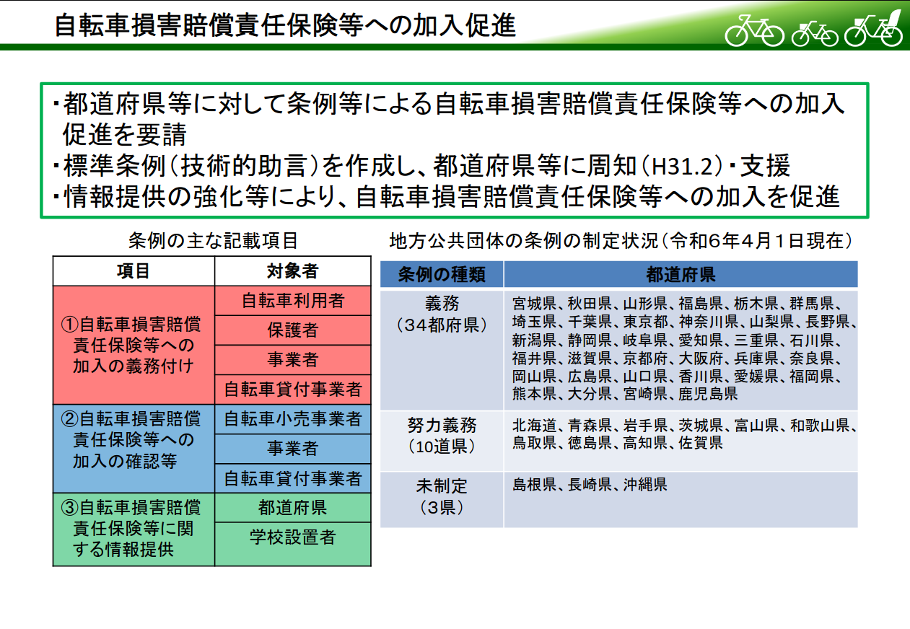

自転車のリスク・マネジメント（損害保険，他）

自転車の損害賠償責任保険
「そろそろちゃんとやろう」第二弾（笑）
私が契約しているキャリアは au なのだが「au 自転車サポート」なるものの案内が来てた。
私は盗難保険と事故・故障時のロードサービスについては自転車購入時に加入済みで，すでに2年分を払い込んでいる。 「au 自転車サポート」はそれらと一部機能が被るものの「付帯保険」で個人賠償責任補償が付いているのは魅力ではある。 保険料の払い込みは通信費と一緒に落ちて月額550円（税込）。 保険の適用が同居家族まで含まれるのもよさげ？
自転車事故で（被害者はもちろん）加害者側になるリスク（＝生起確率×影響度）は馬鹿にできない。 これはママチャリでも他のシティバイクでも同じ。 私は若い頃に割と自転車事故に遭っていて，自動車と衝突してふっ飛ばされたこともあるし（自転車は大破したが奇跡的に捻挫のみで済んだ），出会い頭に歩行者を轢きそうになったこともある（急ブレーキに失敗して自転車ごと前転した。歩行者に当たらなくてよかった）。
自転車損害保険への加入義務は自治体によって対応が異なるようだ。

中国5県では，岡山県，広島県，山口県で義務，鳥取県で努力義務が課せられている。 島根県は義務も努力義務も制定がないが，私が住んでいる松江市は個別の条例で努力義務が課せられている。
自転車利用者は、定期的な点検整備及び事故に備えた損害保険への加入に努めなければならない。
というわけで，ここ数日どうしようかと考えていたが，必要経費と割り切って「au 自転車サポート」に入ることにした。 サービス適用開始（申込受付日の翌日）以降，ポータルサイトで入会証明書（PDF）をダウンロードできる。 忘れずにダウンロードしておくこと。
自転車のリスク・マネジメント
まぁ，自転車損保は「事後への備え」「転ばぬ先の杖」と言える。 日本には「自転車安全利用五則」ってのがあるそうで，曰く
- 車道が原則、左側を通行
歩道は例外、歩行者を優先- 交差点では信号と一時停止を守って、安全確認
- 夜間はライトを点灯
- 飲酒運転は禁止
- ヘルメットを着用
ってことらしい。 事故リスクの高いルートは避けるなどの対策も必要かもしれない。 あと（自転車に限らないけど）急ブレーキの練習はしておいたほうがいいよ。
そういえば，広島に居たときは「公道では自分以外みんな気が狂ってると思え」とか言われてたような気もする。 これも一種のセキュリティ・リスク管理だよ（笑）
安全に楽しく遊びましょう。
ブックマーク
- 松江市:暮らしのガイド:自転車安全利用の推進
- おすすめの自転車保険ランキング2022年 オリコン顧客満足度調査｜調査企業20社の比較・クチコミ・評判
- 自転車保険の加入義務化にも対応！家族で入るとお得なau自転車サポート（KDDI公式）
- 自転車の灯火についての決まりを全都道府県調べてみた – CyclingEX CLASSIC
- 【パーツ】あなたのライトは、明るさ基準値クリアしていますか？！ : この記事の800ルーメンの前照灯を購入した。スマートモードが便利